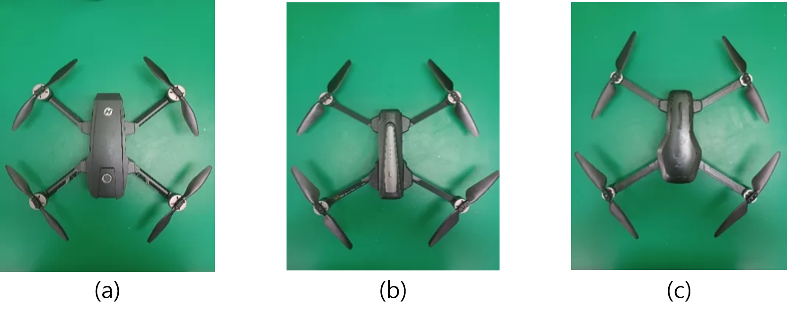
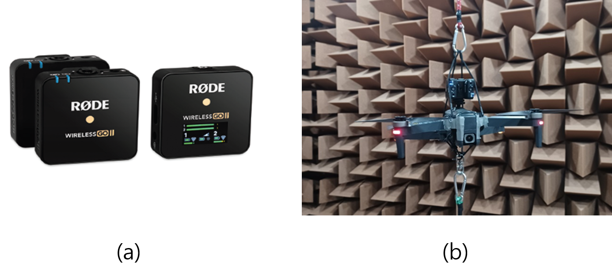
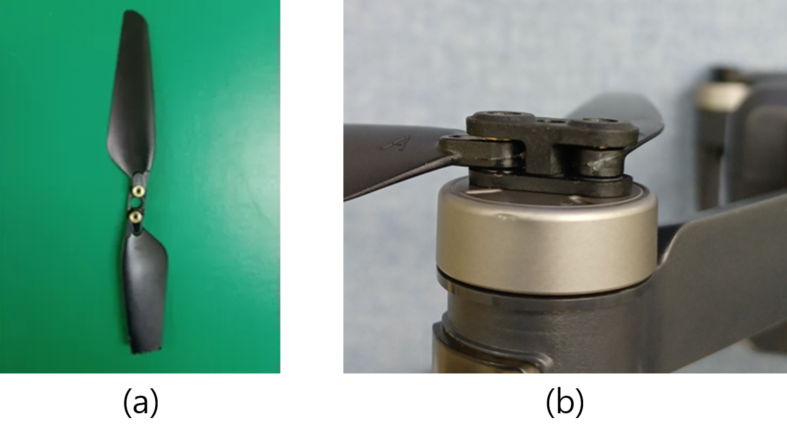
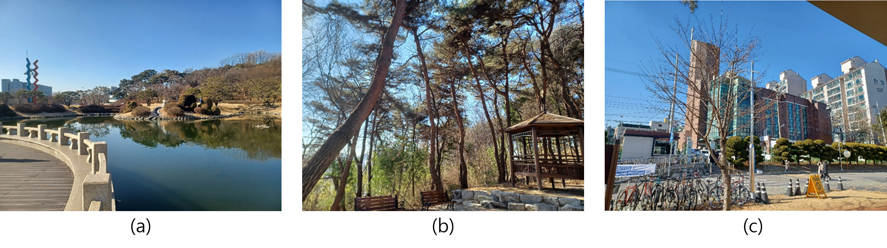
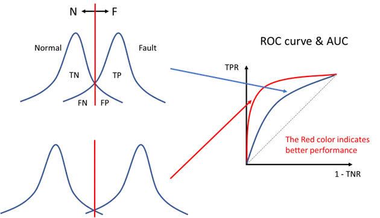

This repository contains 2025 ICSV31 AI Challenge descriptions and baseline code.
2025-02-05 23:00 (KST): Challenge Launch
The organizing committee of the ICSV31 conference hosts an AI Challenge focusing on diagnosing machine anomalies using acoustic signals. Participants will train AI models on drone sound signals and identify anomalies from a provided dataset. A grand prize of 1,500 USD will be awarded to the winning team.
Participation is team-based, and at least one team member must be a registered attendee of the ICSV31 conference at the time of model submission. The conference will also hold a dedicated workshop session for participating teams.
| Event | Date |
|---|---|
| Challenge Launch (distribution of task descriptions, train & eval datasets) | 5 Feb. 2025 |
| Distribution of test dataset | 1 April 2025 |
| Final submission (Anomaly score, trained model, technical report) | 21 May 2025 |
| Competition result announcement | 31 May 2025 |
2025 ICSV AI Challenge aims to diagnose the state of drones by detecting anomalous sounds caused by mechanical failures in propellers and motors in noisy environments. In particular, drone sounds that vary depending on operational conditions, such as flight directions, along with background noise, make this task highly challenging.
The ultimate goal of the competition is to develop anomaly detection models capable of identifying anomalies in drones using data collected under various conditions.
Dataset for ICSV31 AI Challenge: download
This ICSV31 AI Challenge dataset is based on the drone noise data, originally constructed by Wonjun Yi, Jung-Woo Choi, Jae-Woo Lee for the drone fault classification task.
The evaluation metric for this challenge is ROC-AUC (Receiver Operating Characteristic - Area Under the Curve, AU-ROC). ROC-AUC evaluates how well the distributions of normal and anomalous data are separated, independent of any specific decision boundary.
This challenge provides a baseline code. However, using or improving the baseline model is not mandatory for participation. Teams are free to develop their own models.
Please submit your files to Submission link
This challenge is hosted by the KSNVE (Korean Society of Noise and Vibration Engineering). For inquiries, please send an email to Organizing Committee.
We look forward to your participation and are happy to assist with any questions!




